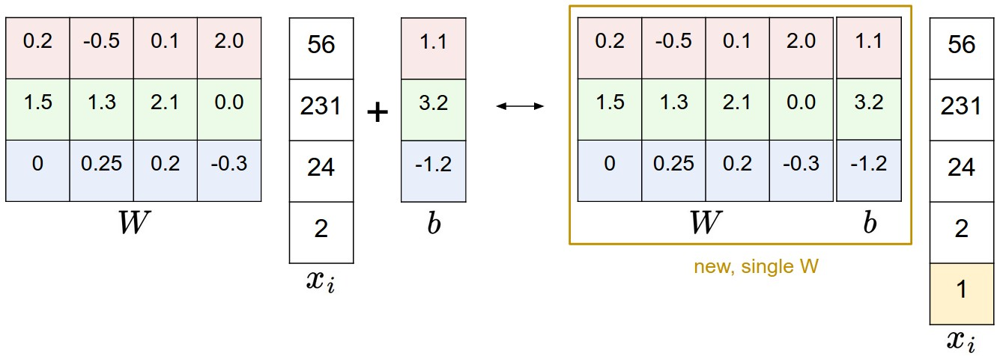

线性分类
Table of Contents
上节我们讨论了如何为一张图片从给定的标签中选出正确的标签。 提出了 k 近邻分类器（kNN），通过与训练集中的数据进行比较，使用训练集中最接近的一张图片的标签当作测试图片的标签。 kNN 算法有一些缺点：
- 分类器必须保存所有训练集数据已备测试数据进行对比。
- 测试数据进行的比较操作非常费时，需要进行大量的计算。
Overview：接下来我们将寻找一种更为强大的图片分类方法，一步步扩展到神经网络和卷积神经网络。 这篇文章讲包含两个部分：
- 分值函数（Score function）对输入数据进行求值，计算不同类别下的得分，
- 损失函数（Loss function）计算预测得分和真实标签之间的差距。
我们将把这个问题看作一个优化问题，通过最小化损失函数来调整分值函数的参数。
从图片到标签分值的参数化映射
首先我们需要考虑一个将一张图片的像素值映射到每个标签的分值的函数。 假设训练数据集 \(x_i\in R^{D}\) ，其中每个训练数据对应标签 \(y_i\) 。其中 \(i=1,\dots,N,y_i\in 1\dots K\) 。 即，我们有 \(N\) 个训练数据（维度为 \(D\) ）和 \(K\) 个不同的标签。 例如，CIFAR-10 数据集中，我们有 \(N=50000\) 个训练数据，每个数据维度为 \(D=32x32x3=3072\) ，共有 \(K=10\) 个标签。 现在需要定义一分值函数 \(f:R^{D}\rightarrow R^{K}\) ，表示从图片数据到标签的映射。
线性分类 先从最简单的线性映射关系开始吧： \[ f(x_i,W,b)=Wx_i+b \] 其中，我们假设图片数据 \(x_i\) 是一个被展开的一维（ \([D\times1]\) ）数组。矩阵 \(W([K\times D])\) 和向量 \(b([K\times1])\) 是方程的参数。 在 CIFAR-10 数据中，第 \(i\) 个图片的数据 \(x_i\) 被展开成 \([3072\times1]\) 的数据， \(W\) 维度为 \([10\times3072]\) ， \(b\) 的维度为 \([10\times1]\) 。 也就是说，3072 个数作为函数的输入，输出为 10 个数（分别代表不同标签的分值）。 其中，参数 \(W\) 通常被称为 权重 ，参数 \(b\) 通常被称为 偏差 。
有些需要注意的点：
- 输入数据 \((x_i,y_i)\) 是不可改变的，我们只能调整参数 \(W,b\) 。我们的目标是使得训练集中每个数据真实标签的分值尽可能的大于其他标签的分值。
- 训练的时候需要耗费大量的时间，但一旦训练好，参数 \(W,b\) 给定之后，测试时完全不需要训练数据了。
- 测试时速度很快，因为只需要进行矩阵乘法和加法，与之前的方法（和训练集全部数据做比较）要快的多。
解释线性分类器
线性分类器通过对每张图片的 3 个颜色通道中所有像素值加权求和来计算标签的分值。 根据我们为权重设置的不同值，此分类器具有在图片某个位置的某个图片上喜欢或是不喜欢的能力。 例如，对于“船”这个标签来说，它的分类器应该需要对蓝色出现更多的图片给出更高的分值（蓝色可能与水对应）。 你可能期望“船”的分类器应该在蓝色通道权重上具有很多正权重 （蓝色的存在会提高“船”标签的得分，而红色/绿色通道的权重为负，因为这些应该降低是“船”的概率）。

假设图片只有 4 个像素，不考虑颜色通道，且只有三个分类标签（红：猫，绿：狗和蓝：船）。 我们将图片像素展开成 1 维，给定参数 \(W,b\) ，计算各自的分值。 上面这个案例中，狗子的分值最高，分类器的结果判定输入为狗。
将图片比作高维点 我们可以把图片看作是高维空间中的某个点，那么整个数据集可以看作是一个点集。 由于我们将每个类别的分值定义为图片所有通道像素值的加权和，因此每个类别的分值都是该空间的线性函数。 我们无法可视化 3072 维空间，但如果我们设想将所有维压缩为仅二维，那么我们可以尝试可视化分类器的工作方式：

上图中，每张图片都被看作是一个点，3 个线性分类器被可视化展示出来。
可以看出， \(W\) 的每行参数分别对应不同标签的分类器。如果改变 \(W\) 中某行参数，那上图展示的那条直线还随之旋转。 相应的，如果改变 \(b\) 中参数，那条直线会上下平移，如果没有偏差项，无论权重如何，所有行都将被迫经过原点。
将线性分类器解释为模板匹配 另一个对于权重 \(W\) 的解释是： \(W\) 可以看作是每个标签类别的模板（或者说是原型）。 通过使用内积将每个模板与图像进行比较，获得图片在每个标签类别的分数，以找到最合适的图像。 从另一个角度看，其实我们仍然在使用“最近邻居算法”，不同的是，我们不使用训练集中所有数据进行比较， 而只是每个标签只使用一张图片，一张经过不断学习最能代表这个标签类别的图片，然后使用（负）内积而不是 L1 或者 L2 作为距离的比较。

上图是训练 CIFAR-10 之后学习到的权重图像。可以看出，“船”这个标签下学习到的模板（权重）包含大量蓝色像素。 所以，如果给定测试图片中包含很多蓝色色素，则很大概率会认为它是“船”。
另外，上图中“马”这个标签的模板看起来像是两个马头的图片，它是因为训练数据中即包含马头向左的图片，也包含马头向右的图片。 同样的，“车”分类器将训练集中的很多车都融合在一张图片中，看起来最后的结果是红色的，这表明训练集中红色的车要比其他颜色的车多。 目前线性分类器很难区分不同颜色的车，随着我们的不断学习，我们会慢慢实现这个功能。 稍微向后拓展一下，神经网络将会在其隐藏层中开发出中间神经元，用来检测特定的汽车类型， 下一层的神经元可以通过各个汽车检测器的加权总和将它们组合成更准确的汽车得分。
偏差处理技巧 我们之前定义的分值函数为： \[ f(x_i,W,b)=Wx_i+b \] 要分别维护两个向量 \(W,b\) 有些麻烦，我们可以将它们合并起来。具体合并方式是，让 \(W\) 扩展增加一维，和 \(b\) 合并， 输入 \(x_i\) 增加一维常量 \(1\) 。新的分值函数： \[ f(x_i,W)=Wx_i \]
以 CIFAR-10 为例， \(x_i\) 的维度为 \([3073\times1]\) ， \(W\) 的维度为 \(10\times3073\) 。

图片数据处理 上面的示例中，我们使用了原始像素值（范围为 0-255）。 在机器学习中，对输入特征进行规范化是一种非常普遍的做法。 对于图片，每个像素值都被看作特征。可以通过对每个特征值减去平均值来使数据居中，得到范围为 \([-127,127]\) 的数据。 进一步常见的预处理是缩放每个元素，以使其值范围为 \([-1,1]\) 。
损失函数
上一节中我们定义了从像素值到标签类别分值的映射关系，其参数为权重 \(W\) 和偏差 \(b\) 。 我们虽然没有对输入数据 \((x_i,y_i)\) 的控制，但有对权重和偏差的控制。 因此，我们可以通过修改权重和偏差来使得正确标签的分值高于其他标签的分值。 我们使用诸如损失函数（有时也称为成本函数或目标）之类的结果来衡量我们的不满。 直观的讲，如果我们在分类训练数据上做的不好，损失会很大，反之，损失会很小。
多类支持向量机损失
我们先介绍一种常见的计算损失的函数：多类支持向量机损失（SVM）。 SVM 希望每个图片的正确标签得分要比不正确标签高出一个固定的幅度 \(\Delta\) 。
设训练集中第 i 张图片为 \(x_i\) ，其标签为 \(y_i\) 。分值函数 \(f(x_i,W)\) 以图片像素为输入，计算不同标签类别的分值， 记作 \(s\) 。例如，第 \(j\) 个标签的分值为 \(s_j=f(x_i,W)\) 。 第 i 张图片的多类支持向量集损失为： \[ L_i=\sum_{j\neq y_i} max(0,s_j-s_{y_i}+\Delta) \]
案例 假设我们有三个标签，对同一个输入获得了 \(s=[13,-7,11]\) 的分值，第一个标签为其真实标签， \(\Delta=10\) 。 可知，损失为： \[ L_i=\max(0,-7-13+10)+\max(0,11-13+10) \]
上式中，第一项中 \(-7-13+10\) 是个负值，然后被约束到 0。 这里的损失为 0 代表着正确的标签分类分值（13）至少比错误的标签分类分值（-7）大 10。 实际上，这个距离为 20，但 SVM 值关心它是不是大于 10。 第二项中 \(11-13+10\) 的值为 8，这表示虽然正确标签的分值要大于错误标签分值，但差距不是很明显，只有 2，所以它的损失记为 8。
最后需要说明的是，函数项 \(\max(0,-)\) 称为合页损失函数（Hinge Loss）。有时候人们会使用合页损失函数的平方版本， 即 \(\max(0,-)^2\) ，这样会对差距的惩罚更大。相对来说，非平方版本的合页损失更为标准，但有些数据集中平方版本的合页损失效果更好。 可以通过交叉验证来决定使用那种函数。

正则化 我们上面的损失函数存在一个问题。假设我们有一个数据集，一组参数 \(W\) 可以正确的对数据集中每个示例进行分类， 即，对于每个数据 \(i\) ，其损失 \(L_i\) 都为 0。但问题在于，这组 \(W\) 不是唯一的。如果 \(W\) 可以将数据集正确分类，那么 \(\lambda W,\lambda>0\) 也都可以将数据集正确分类。
我们可以添加正则化惩罚项 \(R(W)\) 来约束参数。最常见的正则化惩罚是 L2 范式，它通过对所有参数进行二次加和惩罚来阻止较大的权重。 \[ R(W)=\sum_{k}\sum_{l}W_{k,l}^2 \] 可以看出，正则化惩罚项与数据无关，只与参数 \(W\) 有关。 多类向量支持机损失包含两项：数据损失和正则化损失。 \[ L=\frac{1}{N}\sum_{i}L_i+\lambda R(W) \] 完整展开式： \[ L=\frac{1}{N} \sum_{i} \sum_{j \neq y_{i}}\left[\max \left(0, f\left(x_{i} ; W\right)_{j}-f\left(x_{i} ; W\right)_{y_{i}}+\Delta\right)\right]+\lambda \sum_{k} \sum_{l} W_{k, l}^{2} \] 我们将正则化惩罚附加到损失函数中，并由超参数 \(\lambda\) 加权。设置超参数通常由交叉验证确定。
惩罚大权重最大的好处是可以提高分类器的泛化性，因为这意味着没有任何输入维可以肚子对分数产生很大的影响。 例如，我们有一个输入向量 \(x=[1,1,1,1]\) 和两个权重向量 \(w_1=[1,0,0,0],w_2=[0.25,0.25,0.25,0.25]\) 。 两组分类器参数的数据损失都为 1，但其正则化惩罚项不相同。 \(w_1\) 的 L2 范数为 1.0， \(w_2\) 的 L2 范数为 0.25。 因此，根据正则化惩罚项的结果， \(w_2\) 是一个更好的分类器。 这种方法可以提高分类器在测试图片上的泛化性，减少过拟合。
在实践中，通常仅对权重 \(w\) 进行正则化，而不对偏差进行。
代码 损失函数的实现
def L_i(x, y, W): """ unvectorized version. Compute the multiclass svm loss for a single example (x,y) - x is a column vector representing an image (e.g. 3073 x 1 in CIFAR-10) with an appended bias dimension in the 3073-rd position (i.e. bias trick) - y is an integer giving index of correct class (e.g. between 0 and 9 in CIFAR-10) - W is the weight matrix (e.g. 10 x 3073 in CIFAR-10) """ delta = 1.0 # see notes about delta later in this section scores = W.dot(x) # scores becomes of size 10 x 1, the scores for each class correct_class_score = scores[y] D = W.shape[0] # number of classes, e.g. 10 loss_i = 0.0 for j in range(D): # iterate over all wrong classes if j == y: # skip for the true class to only loop over incorrect classes continue # accumulate loss for the i-th example loss_i += max(0, scores[j] - correct_class_score + delta) return loss_i def L_i_vectorized(x, y, W): """ A faster half-vectorized implementation. half-vectorized refers to the fact that for a single example the implementation contains no for loops, but there is still one loop over the examples (outside this function) """ delta = 1.0 scores = W.dot(x) # compute the margins for all classes in one vector operation margins = np.maximum(0, scores - scores[y] + delta) # on y-th position scores[y] - scores[y] canceled and gave delta. We want # to ignore the y-th position and only consider margin on max wrong class margins[y] = 0 loss_i = np.sum(margins) return loss_i def L(X, y, W): """ fully-vectorized implementation : - X holds all the training examples as columns (e.g. 3073 x 50,000 in CIFAR-10) - y is array of integers specifying correct class (e.g. 50,000-D array) - W are weights (e.g. 10 x 3073) """ # evaluate loss over all examples in X without using any for loops # left as exercise to reader in the assignment # my implement delta = 1.0 scores = W.dot(X) margins = np.maximum(0, scores - scores[y, np.arange(len(y))] + delta) # [10 x 50000] loss = np.mean(np.sum(d, axis=0)) return loss
我们现在要做的就是找到使得损失函数最小的权重 \(W\) 。
实际情况下的考虑
\(\Delta\) 的设置 \(\Delta\) 应该设多少呢？真的需要进行交叉验证吗？ 结果表明，无论什么情况下都可以将 \(\Delta\) 设为 1.0。 \(\Delta\) 和 \(\lambda\) 看起来是两个不同的超参数，但实际上都控制着相同的 tradeoff，目标中数据损失和正则化损失的 \(tradeoff\) 。 理解这一点的关键在于权重 \(W\) 的大小将直接影响分值的大小和两损失之间的差异： 当我们减小 \(W\) 时，差异会减小，加大 \(W\) 时，差异会增大。 因此，分值函数中两个超参数的精确值是没有意义的，因为权重可以任意的缩小和扩大差异。 我们唯一要做的是去限制权重 \(W\) 应该需要多大（通过正则化参数 \(\lambda\) ）。
Softmax 分类器
SVM 分类器把函数 \(f(x_i,W)\) 的输出看作每个标签类别的分值，Softmax 分类器对输出的解释更直观（归一化的概率）。 在 Softmax 分类器中，函数映射 \(f(x_i,W)\) 和 SVM 中相同，但其输出的分值看作未归一化的概率， 其损失由原来的合页损失变为交叉熵损失。 \[ L_{i}=-\log \left(\frac{e^{f_{y_{i}}}}{\sum_{j} e^{f_{j}}}\right) \] 等同于： \[ L_{i}=-f_{y_{i}}+\log \sum_{j} e^{f_{j}} \] 其中， \(f_i\) 表示第 \(j\) 个标签类别的分值。和之前一样，整个数据集的损失是所有训练数据的损失 \(L_i\) 的和以及正则化损失 $R(W)$。 函数 \(f_{j}(z)=\frac{e^{z_j}}{\sum_{k} e^{z_{k}}}\) 就是 softmax 方程：将 \(z\) 向量中所有值压缩到 0-1 之间，且所有值的和为 1。
信息论 真实分布 \(p\) 和估计分布 \(q\) 之间的交叉熵为： \[ H(p, q)=-\sum_{x} p(x) \log q(x) \] Softmax 分类器的目标为，最小化估计类概率（ \(q=e^{f_{y_{i}}} / \sum_{j} e^{f_{j}}\) ） 和真实概率分布（每个输入应该只有唯一的输出 \(p=[0,\dots,1,\dots,0]\) ）之间的交叉熵。 交叉熵可以写成熵和 KL 散度的形式： \(H(p, q)=H(p)+D_{K L}(p \| q)\) ，其中熵函数 \(H(p)\) 为 0， 因此这个问题相当于最小化两个分布之间的 KL 散度。换句话说，交叉熵希望估计分布大概率落在正确的标签上。
概率解释 \[ P\left(y_{i} \mid x_{i} ; W\right)=\frac{e^{f_{y_{i}}}}{\sum_{j} e^{f_{j}}} \] 上式表示：给定输入 \(x_i\) 和参数 \(W\) ，分类器对标签 \(y_i\) 的概率。 因此，在概率解释中，我们将正确类别的负对数可能性最小化，可以将其解释为执行最大似然估计（MLE）。
实践问题：数值稳定性 当你实现 Softmax 函数时，函数项 \(e^{f_{y_i}}\) 和 \(\sum_{j}e^{f_j}\) 的结果可能会非常大。 分母很大的数值具有数值不稳定性，我们需要使用规范化技巧去避免它。 上下都乘以常数 \(C\) ： \[ \frac{e^{f_{y_{i}}}}{\sum_{j} e^{f_{j}}}=\frac{C e^{f_{y_{i}}}}{C \sum_{j} e^{f_{j}}}=\frac{e^{f_{y_{i}}+\log C}}{\sum_{j} e^{f_{j}+\log C}} \] 常数 \(C\) 的加入不会影响函数结果，但可以避免数值不稳定性。 一个常见的例子是设 \(C\) 为 \(\log C=-\max_{j}f_{j}\) 。 代码实现：
f = np.array([123, 456, 789]) # example with 3 classes and each having large scores p = np.exp(f) / np.sum(np.exp(f)) # Bad: Numeric problem, potential blowup # instead: first shift the values of f so that the highest number is 0: f -= np.max(f) # f becomes [-666, -333, 0] p = np.exp(f) / np.sum(np.exp(f)) # safe to do, gives the correct answer
可能混淆的命名约定 严格来说，SVM 分类器使用 Hinge 损失，而 Softmax 分类器使用交叉熵损失。 Softmax 分类器的名字来源于 softmax 方程，所以“softmax 损失”这个词其实是有问题的，但一般习惯也可以这样叫。
SVM vs. Softmax

上图为同一条数据在 SVM 和 Softmax 分类器之间的差别。 两个例子中我们使用了相同的分值函数 \(f\) ，区别在于对 \(f\) 的解释： SVM 将其解释为标签类的得分，并且其损失函数鼓励正确的标签类的得分要比其他标签类的得分更高； Softmax 将其解释为标签类的（未归一化的）对数概率，其损失函数鼓励正确标签的概率比其他标签类高。 上诉两个分类器的得分结果各不相同，但这两个数字的比较没有意义。 只有在同一分类器中使用相同数据计算出的损失才有意义。
实际上，SVM 和 Softmax 是可比的 通常情况下二者的表现差别很小，在不同的情况下人们对哪个分类器的效果好点会有不同的看法。 假设现在分数为 \([10,-2,3]\) ，第一类是正确标签类。SVM （ \(\Delta=1\) ）会认为正确标签的分值已经足够大了，它计算的损失为 0。 SVM 不会考虑每个分值的大小，不管分值是 \([10,-100,-100]\) 还是 \([10,9,9]\) ，损失都是 0。 而对于 Softmax 来说， \([10,-100,-100]\) 的损失明显要比 \([10,9,9]\) 大一些。 换句话说，Softmax 永远不会对当前分类满意，永远想要正确标签类的概率大一些，不正确标签类的概率小一些。
总结
- 定义了从输入图片像素数据到标签的映射函数，称为分值函数。
- 参数化方法的优势在于，一旦我们学习了参数，就可以不使用训练数据对测试数据进行预测了。
- 介绍了偏差的处理技巧。将偏差向量融合到权重矩阵中，以方便尽跟踪一个参数矩阵。
- 两种损失函数 SVM 和 Softmax 。